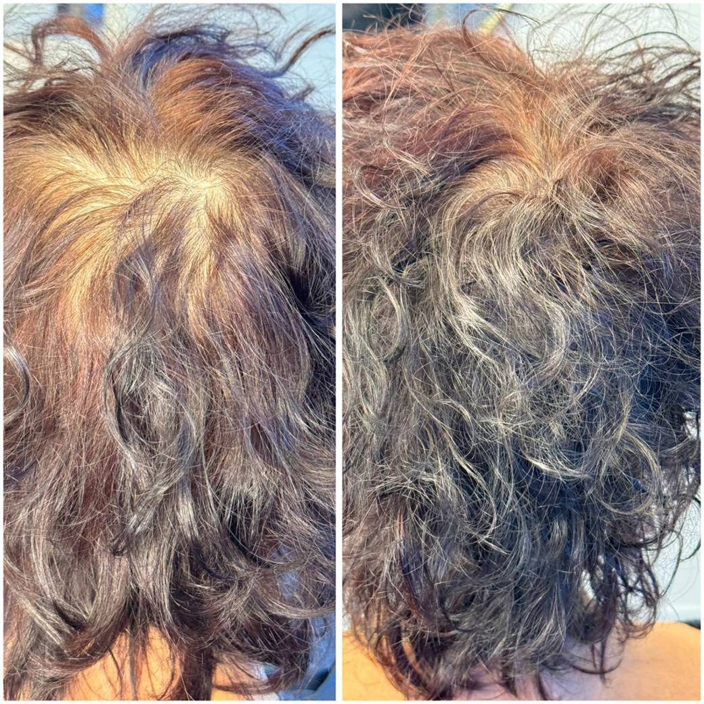
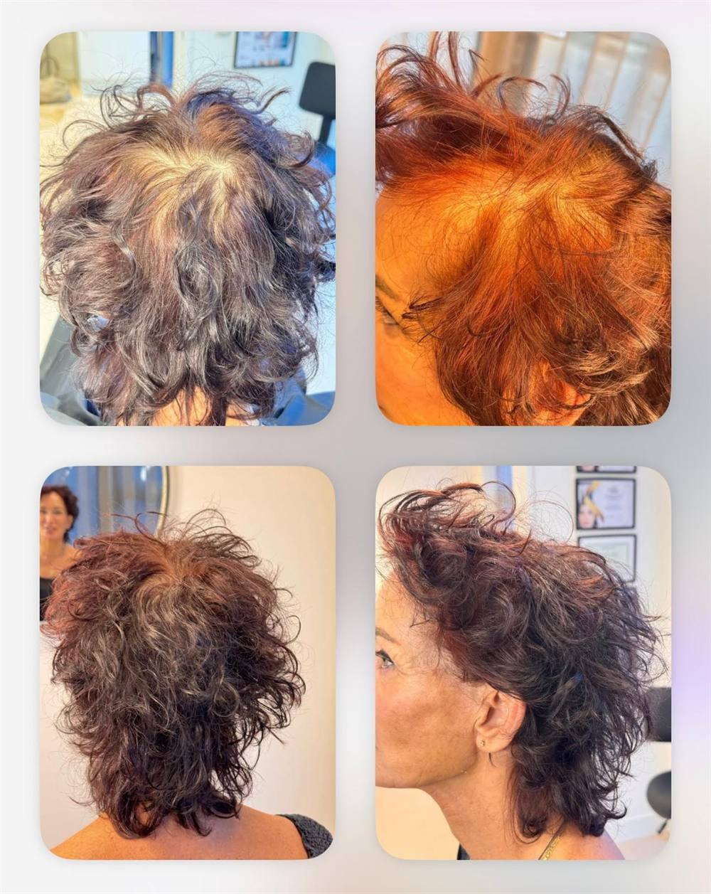

Behandelgids

Bij dunner wordend haar is het zelden het haar zelf dat opvalt — het is het contrast. Een lichte hoofdhuid die door donkerder haar heen schijnt, een scheiding die breder lijkt te worden, een kruin die op een foto ineens oplicht. Hoofdhuidcamouflage neemt dat contrast weg.
Met een fijne naald brengen we een zacht veld pigment aan op de hoofdhuid, tussen uw eigen haar door, in een kleur die bij uw haar past. De hoofdhuid wordt niet bedekt als met een laag verf; hij krijgt dezelfde toon als het haar eromheen, zodat hij niet langer opvalt.
U hoeft er niets voor te scheren en u houdt uw eigen kapsel. Het haar zelf verandert niet: hoofdhuidcamouflage laat geen haar groeien en is geen haargroeimiddel. Het verandert wat u ziet, niet wat er groeit.
Voorwaarde is dat er nog haar staat om tussen te werken. Is het haar op een plek helemaal verdwenen, dan is scalp micropigmentatie de betere keuze.
Heeft u nog haar en wilt u dat houden? Dan is hoofdhuidcamouflage de juiste behandeling.
Is het haar grotendeels weg, of draagt u het liever kortgeschoren? Dan is scalp micropigmentatie dat.
| Hoofdhuidcamouflage | Scalp micropigmentatie | |
|---|---|---|
| Uw haar nu | U heeft nog haar en wilt uw kapsel houden | Weinig tot geen haar, of u draagt het geschoren |
| Wat u stoort | De hoofdhuid schijnt door het haar heen | Kale plekken of een terugwijkende haarlijn |
| Wat we doen | Een zacht veld pigment geeft de hoofdhuid de kleur van uw haar | Punt voor punt wordt elke haarstoppel apart gezet |
| Scheren | Niet nodig | Voor het mooiste resultaat meestal kort geschoren |
| Het effect | Het contrast verdwijnt; uw haar oogt voller | De illusie van een kortgeschoren hoofd |
| Sessies | Eén tot twee | Twee tot drie |
| Houdbaarheid | Ongeveer twee jaar, daarna een opfrissessie | Jaren, met een incidentele touch-up |
| Tarief | € 150 per zone per sessie | € 600 per zone |
De zone-indeling is voor beide behandelingen dezelfde. De tekening staat op de tarievenpagina.
Het zit in de techniek. Bij SMP wordt elke pigmentpunt afzonderlijk geplaatst, zodat er losse haarstoppels ontstaan die ook van dichtbij kloppen. Dat is nauwkeurig werk en het kost tijd — vandaar de hogere prijs en het hogere aantal sessies.
Bij hoofdhuidcamouflage werken we met een naald die in één beweging een veld van vele kleine punten legt. Daardoor ontstaat geen patroon van losse stoppels maar een gelijkmatige, zachte toon — precies wat u nodig heeft als het haar er nog staat en de hoofdhuid er alleen doorheen schijnt.
Hoofdhuidcamouflage is bewust niet permanent. Het pigment gaat minder diep dan bij SMP en is verdund, waardoor uw lichaam het geleidelijk afbreekt. Over ongeveer twee jaar vervaagt het rustig en gelijkmatig. Daarna kunt u kiezen voor een opfrissessie.
Dat is eerder een voordeel dan een beperking. Uw haar verandert in twee jaar: er komt grijs bij, u kiest een andere kleur, de dichtheid verschuift. Bij elke opfrissing stemmen we de toon opnieuw af op het haar dat u dan heeft. Een permanente pigmentatie kan dat niet.
Omdat het pigment ondieper en verdund zit, loopt het ook niet uit. Het verdwijnt gelijkmatig in plaats van te vervagen tot een vlek.
€ 150 per zone per sessie. Meestal zijn twee sessies nodig, dus reken op ongeveer € 300 per zone. Heeft u aan één sessie genoeg, dan betaalt u ook maar één. Welke zones nodig zijn bepalen we tijdens het gratis consult; de zone-indeling staat met een tekening op de tarievenpagina.

Hoofdhuidcamouflage is nieuw in mijn praktijk en ik bouw er een portfolio mee op. Daarvoor zoek ik een beperkt aantal modellen: u betaalt 50% van het normale tarief, en ik mag uw resultaat fotograferen en laten zien.
Niet iedere aanmelding komt in aanmerking. Dat beoordeel ik eerlijk tijdens het gratis consult.
Bekijk of u in aanmerking komtHet consult is gratis en vrijblijvend. We kijken naar uw haar en hoofdhuid, en u hoort meteen of hoofdhuidcamouflage of SMP bij u past.
Plan een consult